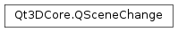

Qt3DCore.QSceneChange¶
Inherited by: Qt3DCore.QComponentAddedChange, Qt3DCore.QComponentRemovedChange, Qt3DCore.QPropertyUpdatedChangeBase, Qt3DCore.QStaticPropertyUpdatedChangeBase, Qt3DCore.QPropertyUpdatedChange, Qt3DCore.QDynamicPropertyUpdatedChange, Qt3DCore.QNodeCreatedChangeBase, Qt3DCore.QNodeCommand, Qt3DCore.QNodeDestroyedChange, Qt3DCore.QPropertyValueAddedChangeBase, Qt3DCore.QStaticPropertyValueAddedChangeBase, Qt3DCore.QPropertyValueAddedChange, Qt3DCore.QPropertyNodeAddedChange, Qt3DCore.QPropertyValueRemovedChangeBase, Qt3DCore.QStaticPropertyValueRemovedChangeBase, Qt3DCore.QPropertyNodeRemovedChange, Qt3DCore.QPropertyValueRemovedChange, Qt3DRender.QFrameGraphNodeCreatedChangeBase
Synopsis¶
Functions¶
- def
deliveryFlags() - def
setDeliveryFlags(flags) - def
subjectId() - def
type()
Detailed Description¶
The base class for changes that can be sent and received by Qt3D’s change notification system.
-
class
PySide2.Qt3DCore.Qt3DCore.QSceneChange(type, subjectId)¶ Parameters: - type –
PySide2.Qt3DCore.Qt3DCore.ChangeFlag - subjectId –
PySide2.Qt3DCore.Qt3DCore::QNodeId
Constructs a new
QSceneChangewithtypeandsubjectId.- type –
-
PySide2.Qt3DCore.Qt3DCore.QSceneChange.DeliveryFlag¶ The types of change that can be sent and received by Qt3D’s change notification system.
Constant Description Qt3DCore.QSceneChange.BackendNodes Qt3DCore.QSceneChange.Nodes Qt3DCore.QSceneChange.DeliverToAll
-
PySide2.Qt3DCore.Qt3DCore.QSceneChange.deliveryFlags()¶ Return type: PySide2.Qt3DCore.Qt3DCore::QSceneChange.DeliveryFlagsReturns the set delivery flags.
See also
PySide2.Qt3DCore.Qt3DCore::QSceneChange.setDeliveryFlags()
-
PySide2.Qt3DCore.Qt3DCore.QSceneChange.setDeliveryFlags(flags)¶ Parameters: flags – PySide2.Qt3DCore.Qt3DCore::QSceneChange.DeliveryFlagsSets the delivery flags of the change to
flags.See also
PySide2.Qt3DCore.Qt3DCore::QSceneChange.deliveryFlags()
-
PySide2.Qt3DCore.Qt3DCore.QSceneChange.subjectId()¶ Return type: PySide2.Qt3DCore.Qt3DCore::QNodeIdReturns scene change subject id.
-
PySide2.Qt3DCore.Qt3DCore.QSceneChange.type()¶ Return type: PySide2.Qt3DCore.Qt3DCore.ChangeFlagReturns the scene change type.
© 2018 The Qt Company Ltd. Documentation contributions included herein are the copyrights of their respective owners. The documentation provided herein is licensed under the terms of the GNU Free Documentation License version 1.3 as published by the Free Software Foundation. Qt and respective logos are trademarks of The Qt Company Ltd. in Finland and/or other countries worldwide. All other trademarks are property of their respective owners.